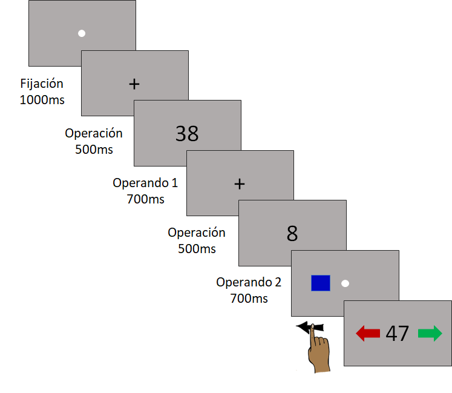

SAN2022
Efecto del cálculo mental sobre el desplazamiento de la atención: replicación de Liu et. al. (2017)
Introducción
Distintos estudios han identificado un sesgo espacial asociado al procesamiento de información numérica. Percibir números pequeños genera un desplazamiento atencional hacia la izquierda, mientras que número grandes lo hacen hacia la derecha (puede encontrarse una revisión detallada en Fischer & Shaki, 2014). Resultados similares se observaron con operaciones de suma y resta Liu, Cai, Verguts, & Chen (2017), sin embargo, la evidencia al respecto es constradictoria.
El objetivo del presente trabajo es replicar el estudio de Liu et al. (2017) y evaluar si la realización de una operación de suma o resta facilita la detección de estímulos presentados a derecha o izquierda, respectivamente, y si este efectp depende del nivel de dificultad de la operación o el tiempo de latencia en la presentación del estímulo.
Método
Participantes
Participaron 30 adultos de entre 18 a 30 años, hispanoparlantes, sin diagnósticos neurológicos o neuropsicológicos, ni alteraciones sensoriales visuales.
Estímulos y procedimiento
Se utilizó el paradigma de doble tarea, con una tarea principal de detección de estímulos y una secundaria de verificación de operaciones de suma y resta, administradas por medio de una computadora.
Detección de estímulos:
Tras la apación en la pantalla de un rectángulo azul a la izquierda o derecha de un punto de fijación, el participante debía indicar su ubicación presionando las flechas del teclado lo más rápido posible. Se registró el tiempo de respuesta (TR) y si la respuesta era correcta o no.
Verificación de operaciones: Se presentaba secuencialmente los componentes de una operación de suma o resta incluyendo el resultado. El participante debía indicar si este último era correcto presionando una flecha en el teclado. Para cada ensayo se registró si la respuesta era correcta o no.
Las operaciones se fueron seleccionando al azar de un conjunto de 192 restas y 192 sumas (Glaser & Knops, 2020) que cumplían las siguientes condiciones:
El primer operando era siempre mayor que el segundo;
El tamaño medio del problema era igual para sumas y restas;
Se equipararon la cantidad de resultados pares e impares;
Se equipararon las cantidad de operaciones con y sin acarreo;
Se excluyeron las operaciones con operandos iguales (ej. 23 + 23 ) o con operandos con decenas o unidades iguales (43 + 46 o 26 + 76);
Se excluyeron las operaciones con cero o un múltiplo de 11 en sus operandos o resultados.
En la figura 1 puede observarse la secuencia de presentación de ambas tareas.

Cada participante realizó 4 bloques de 10 ensayos de prueba y 36 experimentales (un total de 144 ensayos). El rectángulo a detectar se presentaba entre el segundo operando y el resultado de la operación, con variaciones en el tiempo de presentación. Una vez que el último operando desaparecía, el rectángulo podía presentarse a los 300 ms, 750 ms o 1250 ms.
Resultados
En primer lugar, se eliminaron los datos pertenecientes a participantes con menos del 70% de respuestas correctas para asegurar que se encontraban realizando la operación correspondiente al momento de la detección del rectángulo. Por el mismo motivo, se eliminaron un 12% de observaciones en que la respuesta a la operación fue incorrecta, aproximadamente la misma proporción para sumas y restas.
| Operación | Detección | Operación |
|---|---|---|
| Resta | 0.99 | 0.81 |
| Suma | 0.99 | 0.84 |
Luego, se eliminaron los outliers usando los criterios establecidos por Berger & Kiefer (2021) por condición, aproximadamente un 3% de las observaciones.
| Operación | M | DE | Mdn | RIC | Proporción de outliers |
|---|---|---|---|---|---|
| Derecha | |||||
| Resta | 819.15 | 431.02 | 672 | 374.50 | 0.03 |
| Suma | 732.78 | 385.87 | 615 | 346.25 | 0.03 |
| Izquierda | |||||
| Resta | 778.04 | 414.90 | 651 | 336.00 | 0.03 |
| Suma | 731.80 | 384.22 | 610 | 320.00 | 0.03 |
Finalmente, ajustó un modelo lineal mixto con:
Tiempos de reacción como variable dependiente.
Efectos fijos:
o La operación (suma o resta).
o La ubicación del rectángulo azul (izquierda o derecha).
o El tiempo de latencia para la presentación del rectángulo (300 ms, 750 ms y 1250 ms).
o Interacciones entre los anteriores.
Efectos aleatorios:
o Participante.
o Bloque.
o ID de la cuenta.
| Efectos aleatorios | AIC | LRT | gl | p valor |
|---|---|---|---|---|
| <none> | 52209.14 | |||
| (1 | id_participantes) | 53279.60 | 1072.46 | 1 | 0.00 |
| (1 | id_operacion) | 52208.70 | 1.56 | 1 | 0.21 |
| (1 | id_bloque) | 52235.66 | 28.52 | 1 | 0.00 |
| F | gl1 | gl2 | p valor | |
|---|---|---|---|---|
| operacion | 31.74 | 1 | 3538.30 | 0.00 |
| ubicacion | 4.45 | 1 | 3538.27 | 0.03 |
| SOA | 45.85 | 2 | 3538.62 | 0.00 |
| acarreo | 0.00 | 1 | 3539.27 | 0.99 |
| operacion:ubicacion | 2.57 | 1 | 3539.52 | 0.11 |
| operacion:SOA | 3.86 | 2 | 3539.22 | 0.02 |
| ubicacion:SOA | 0.39 | 2 | 3538.84 | 0.67 |
| operacion:acarreo | 0.00 | 1 | 3539.46 | 0.95 |
| ubicacion:acarreo | 0.23 | 1 | 3539.64 | 0.63 |
| SOA:acarreo | 0.41 | 2 | 3539.08 | 0.66 |
| operacion:ubicacion:SOA | 0.38 | 2 | 3539.16 | 0.68 |
| operacion:ubicacion:acarreo | 0.06 | 1 | 3538.82 | 0.80 |
| operacion:SOA:acarreo | 0.42 | 2 | 3539.01 | 0.66 |
| ubicacion:SOA:acarreo | 0.12 | 2 | 3539.12 | 0.88 |
| operacion:ubicacion:SOA:acarreo | 0.24 | 2 | 3539.08 | 0.79 |
No se encontraron interacciones significativas entre la ubicación del rectángulo y la operación, lo cuál sugiere que no habría diferencias en los tiempos de respuesta en la tarea de detección asociadas a la localización del estímulo y la operación que lo precede.
Tampoco se encontraron interacciones significativas entre ubicación, operación y latencia, ni entre ubicación, operación y acarreo.
Por otra parte, se encontró una interacción significativa entre el tiempo de latencia y la operación.
| SOA | operacion | emmean | SE | df | lower.CL | upper.CL | .group |
|---|---|---|---|---|---|---|---|
| 1250 | Suma | 647.3100 | 50.09824 | 28.03095 | 505.5363 | 789.0837 | a |
| 750 | Suma | 738.2897 | 50.10626 | 28.04880 | 596.5000 | 880.0793 | b |
| 1250 | Resta | 745.8160 | 50.11721 | 28.07307 | 604.0046 | 887.6274 | b |
| 750 | Resta | 809.6501 | 50.10778 | 28.05146 | 667.8572 | 951.4430 | c |
| 300 | Suma | 818.5052 | 50.19958 | 28.25815 | 676.5304 | 960.4799 | c |
| 300 | Resta | 840.2728 | 50.17723 | 28.20733 | 698.3422 | 982.2034 | c |
Al realizar comparaciones entre pares utilizando la prueba de Sidak se encontró que los TR son más altos en las restas que la sumas a los 750 ms y a los 1250 ms. A su vez, en ambas operaciones los TR son menores a los 1250 ms que a los 300 ms y a los 750 ms. En la suma, también se diferencian los TR entre la latencia de 300 ms y la de 750 ms.

Conclusiones
Los resultados obtenidos no aportan evidencia a favor de la hipótesis del estudio original (Liu et al., 2017) en tanto no se detectó un desplazamiento atencional vinculado a la realización de sumas y restas (no se observaron interacciones entre la ubicación y la operación). El resultado es consistente independientemente del tiempo de latencia para la presentación del estímulo y el nivel de dificultad de la operación.
Por otro lado, las diferencias en los TR en la tarea de detección asociadas a la operación podría sugerir un vínculo entre estas últimas y la atención espacial, con mayores requerimientos atencionales por parte de la resta. Esto es consistente con numerosos estudios que asocian las realización de operaciones aritméticas con habilidades espaciales, atención espacial y memoria de trabajo visoespacial (ver Hawes & Ansari, 2020 para una revisión sistemática). Estudios futuros al respecto deberían incluir una tarea simple de detección para obtener una medida de base.